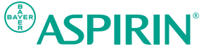

아스피린 Aspirin
아스피린(Aspirin)은 1899년 독일 바이엘(Bayer)이 아세틸살리실산을 상표명으로 출시한 진통·해열·소염제다. 세계 최초의 대중 합성 의약품 가운데 하나로, OTC 진통제의 대명사가 되었다.
최종 업데이트

아스피린은 어떤 브랜드인가
아스피린(Aspirin)은 1899년 독일 바이엘(Bayer)이 아세틸살리실산을 상표명으로 출시한 진통·해열·소염제다. 세계 최초의 대중 합성 의약품 가운데 하나로, OTC 진통제의 대명사가 되었다.
아스피린은 어떻게 봐야 할까
아스피린은 최초의 대중 합성 의약품 가운데 하나로, OTC 진통제의 대명사가 된 바이엘의 상징이다. 헤리티지, 핵심 제품, 모회사 구조를 함께 보면 헬스·제약 안에서의 위치가 또렷해진다.
아스피린은 어떻게 시작되고 성장했나
아스피린은 1899년 독일의 제약회사 바이엘이 출시한 진통•소염•해열제로, 버드나무에서 추출한 살리실산 성분을 이용해 만들어졌다. 20세기 말, 아스피린이 심뇌혈관질환에 효과가 있다는 연구 결과가 밝혀지면서 재조명되어, 현재까지 새로운 효능에 대해 연구가 이루어지고 있다.
아스피린의 브랜드 아이덴티티는 무엇인가
브랜드를 알리기 위한 광고부터 최근의 유머러스한 광고까지 다양한 홍보 활동으로, 아스피린은 대표적인 진통제 브랜드가 되었다. 또한, 기업 차원에서 전개하는 다양한 사회 공헌 활동을 통해 사람들의 삶의 질 향상이라는 철학을 실현하고 있다.
아스피린의 대표 제품과 서비스는 무엇인가
정제·발포정·저용량 아스피린 등 다양한 제형으로 판매된다. 진통·해열 일반의약품과 심혈관 예방용 저용량 라인으로 나뉜다.
아스피린은 누가 만들고 이끌었나
독일 바이엘(Bayer)의 연구진이 아세틸살리실산을 합성하고 1899년 상표명으로 상품화했다.
아스피린은 지금 어떤 상태인가
더 알아둘 것
독일 레버쿠젠에 본사를 둔 바이엘이 보유한다. 1차 세계대전 이후 미국 등 일부 국가에서는 상표권을 잃어 일반명으로도 쓰인다.
아스피린 연혁 — 주요 사건은 언제였나
아스피린 로고는 어떻게 변해왔나
대표 로고대표 브랜드 마크
BI/CI 아카이브보관 이미지 1자주 묻는 질문
아스피린는 언제 설립되었나요?
아스피린는 1899년 설립되었습니다.
아스피린는 어떤 산업의 브랜드인가요?
아스피린는 헬스·제약 분야의 브랜드입니다.
아스피린의 브랜드 아이덴티티는 무엇인가요?
브랜드를 알리기 위한 광고부터 최근의 유머러스한 광고까지 다양한 홍보 활동으로, 아스피린은 대표적인 진통제 브랜드가 되었다.
아스피린의 대표 제품은 무엇인가요?
정제·발포정·저용량 아스피린 등 다양한 제형으로 판매된다.
아스피린는 현재 어떤 상태인가요?
국가: 독일; 본사: 레버쿠젠(Leverkusen); 산업: 헬스·제약
아스피린의 공식 웹사이트는 어디인가요?
아스피린의 공식 웹사이트는 https://www.aspirin.com 입니다.
출처와 검증
아스피린 관련 참고: 공식 웹사이트 · 위키데이터 Q10420388. 브랜드명은 한글과 원어를 함께 표기하되 데이터에 없는 표기는 만들지 않습니다. 기원 국가·설립연도는 검수된 정의문에서 확인된 값을 우선하고, 없을 때만 공식 웹사이트 URL이 일치하는 위키데이터 개체의 값을 씁니다. 위키데이터 값은 2026-09-07 기준입니다.